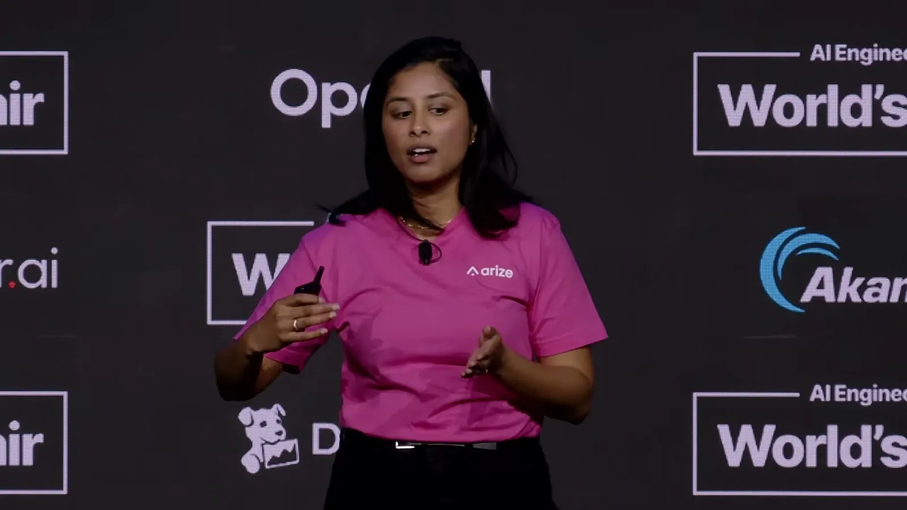
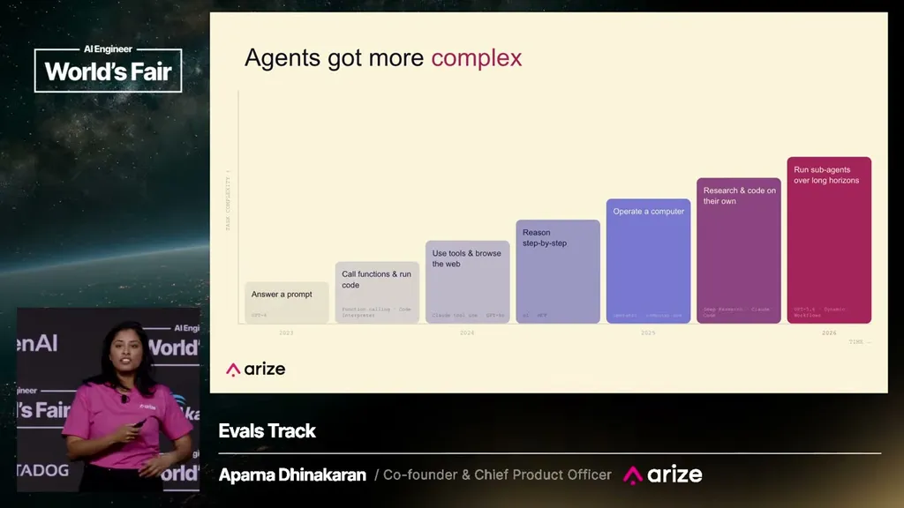
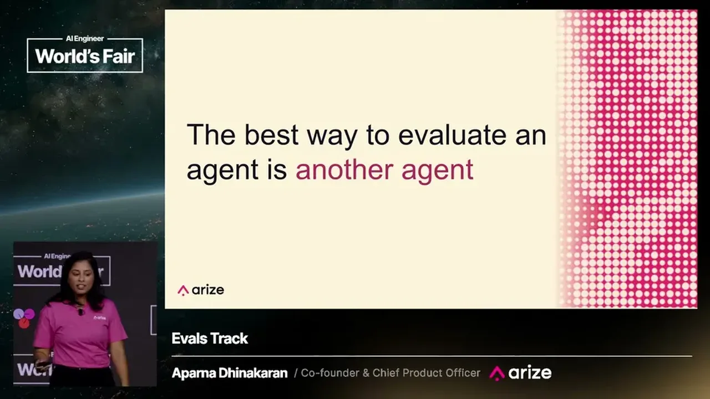
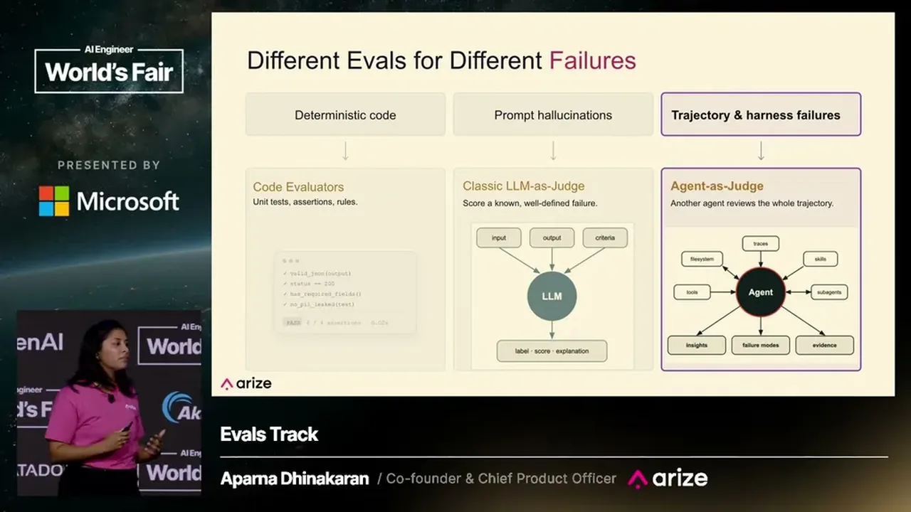

Dhinakaran cites Arize's own production numbers: over 100 million evals run per month across their customers, with the average team running about 12 eval jobs and top teams running over 3,800 distinct evaluators.
“The average team runs about 12 different eval jobs with the top teams running over 3,800 different evaluators”
▶ watch at 01:02
As frontier models added tool calls, reasoning, deep research, and sub-agents across 2023-2025, Arize's internal agent Alex began forgetting context, losing track of task completion, and getting stuck in loops. Classical LLM-as-a-judge evals, built around fixed rubrics and scores, could not catch these failure modes because each user interaction produced a structurally different trajectory rather than a deterministic flow.
“the classical LLM as a judge evals, that probably many of you have written in this room, just weren't for us to be able to catch all the types of failures that we were experiencing”
▶ watch at 03:05
Dhinakaran's proposed fix is to evaluate an agent with another agent capable of adaptive, dynamic analysis rather than applying a fixed rubric. This doesn't replace deterministic or LLM-as-a-judge evals; it adds a third tool suited to trajectories that vary run to run.
“What if the best way to an evaluate an agent was actually with an agent”
▶ watch at 03:36“Agent as a judge is about adaptive dynamic analysis”
▶ watch at 04:09
Arize released Signal, a long-running agent that reads submitted traces and discovers issue patterns a classical eval would never catch with a deterministic rubric, including subtle failures like a tool being called repeatedly in a loop or an inefficient trajectory. Signal can also open a PR with a proposed fix once it identifies the problem.
“Signal's actually a long-running agent that can read traces sent in, discover patterns of issues”
▶ watch at 04:39
The 100M-evals-a-month and 3,800-evaluators figures are Arize's own platform telemetry, presented without independent verification, and Signal is being announced from the same stage that's selling it (ours).
| Stance | Claim | t |
|---|---|---|
| asserts | Arize's average customer team runs about 12 eval jobs, with top teams running over 3,800 distinct evaluators. | 01:02 |
| warns | Classical LLM-as-a-judge evals were not able to catch the types of failures Arize's own agent Alex was producing. | 03:05 |
| asserts | Arize's core insight was that the best way to evaluate an agent might be with another agent. | 03:36 |
| asserts | Agent as a judge is defined as adaptive, dynamic analysis, contrasted with LLM as a judge's fixed rubric and fixed scores. | 04:09 |
| asserts | Signal is a long-running agent that reads submitted traces and discovers failure patterns classical rubric-based evals would miss. | 04:39 |
Machine-readable copy embedded in this page (script#ontology) and in the corpus ontology.